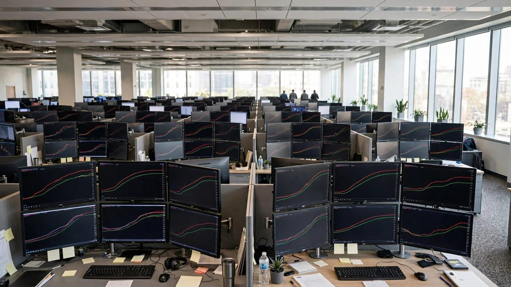

Nikkei Falls as Oil and Chip Stocks Hit Tokyo, While London and Toronto Rise
Tokyo fell on Tuesday after a holiday as Brent held near 105.9 dollars and chip shares slid. London banks lifted the FTSE 100 on Monday, and Toronto had its best day in five weeks on Friday after weak jobs data cut rate hike bets.

Key points
- Toronto closed its first session after the Thanksgiving break.
- Toronto added to its run after the Thanksgiving break, while Tokyo and Mumbai settled their moves for the day.
- Tokyo closed lower.
Updated 01:14 UTC
Toronto closed its first session after the Thanksgiving break. The S&P/TSX Composite ended at 35,983.98, up 319.36 points, or 0.9 percent, from Friday's close of 35,664.62. Measured from the 35,145.40 close before Friday's session, the two session gain is 2.39 percent. The index held its morning gains even as semiconductor shares fell worldwide. Investors now wait for US consumer inflation data due on Wednesday. Mumbai's final numbers stand as reported below. The Sensex closed at 73,033.78, up 1.54 percent, as IT shares rallied after HCLTech reported its earnings.
Updated 19:18 UTC
Toronto added to its run after the Thanksgiving break, while Tokyo and Mumbai settled their moves for the day. Our markets watcher put the S&P/TSX Composite at 36,029.83, up 2.52 percent from 35,145.40, the close before Friday's session. Reuters reported TSX futures up 1.1 percent early on Tuesday as bond yields steadied and gold and silver prices edged higher. Canada's 10 year yield eased to 3.878 percent. BNN Bloomberg reported the index up nearly 200 points late in the morning, helped by energy, telecom and financial shares. Friday's soft jobs data still set the tone in Toronto. It cut bets on a Bank of Canada rate hike this month.
Tokyo closed lower. The Nikkei 225 ended at 67,777.52, down 1.82 percent from 69,030.92. Selling centered on chip and memory shares after Chinese maker CXMT reported progress on a denser memory design. Morningstar, citing Dow Jones, said Kioxia was the biggest loser on the index and that Asian AI stocks fell after US chip shares weakened overnight. Oil held near two week highs and added pressure. Reuters tied that to attacks on Saudi Arabia and a fragile energy truce between Russia and Ukraine.
Mumbai closed the other way. The Sensex ended at 73,033.78, up 1.54 percent from 71,924.68. The Hindu BusinessLine said the Nifty 50 rose 1.60 percent to 22,721.95 and the Nifty IT index jumped more than 5 percent. PTI reported HCLTech up 8.28 percent after net profit rose 21.18 percent to 5,132 crore rupees, with TCS up 6.59 percent. PTI also put Brent crude down 1.66 percent at 104.6 dollars a barrel, and the rupee recovery after Reserve Bank of India measures helped sentiment.
Updated 12:43 UTC
London kept rising on Tuesday and hit a three week high. Reuters reported the FTSE 100 up 0.73 percent at 10,762.01 by 10:23 GMT, its highest level since September 23, while the FTSE 250 rose 0.28 percent. Banks led the move. The wider banks sector rose 1.2 percent, and NatWest rose 2.6 percent after Barclays raised the stock to overweight from equal weight. BP rose 1.3 percent to a six month high after the company said third quarter refining margins had tripled from a year earlier. Melrose Industries led the index with a gain of 3.6 percent. Whitbread rose 2.2 percent to its highest since March after the Premier Inn owner set out a five year turnaround plan.
Lower oil and lower yields helped. Oil fell 2 percent on the prospect of more diesel supplies from Russia. The yield on the 10 year UK gilt fell nearly 5 basis points to 5.40 percent. Healthcare shares rose 1.7 percent, and precious metal miners rose 1.5 percent as gold and silver prices climbed. In a separate Reuters report early in the session, the pan European STOXX 600 rose 0.44 percent to 638.44, and London was the strongest market in the region. The Financial Times reported, citing four sources, that finance minister John Healey will not raise capital gains tax to the same level as income tax. The International Monetary Fund said Britain needs to keep deficit reduction on track.
Stock markets split across the world as traders worked through oil above 100 dollars, a chip selloff and a run of holiday closures. Our markets watcher recorded the Nikkei 225 at 67,774.53, down 1.82 percent from 69,030.92. It put the FTSE 100 at 10,656.28 and the S&P/TSX Composite at 35,664.62. The three moves came in different sessions, and each had a clear local cause.
Tokyo drops after the holiday
Tokyo returned from a Monday public holiday and fell fast. Reuters said the Nikkei sank 2.6 percent in early trade on Tuesday, October 13, while The Wall Street Journal put the index down 2.0 percent at 67,644.31 early in the session. Chip and technology shares led the drop. The Journal listed Kioxia down 8.8 percent, Advantest down 7.0 percent and SoftBank Group down 6.1 percent. Reuters linked the fall to Brent crude at 105.9 dollars a barrel, near a two week high, attacks on Saudi Arabia, a fragile Russia and Ukraine energy truce, and a 0.5 percent overnight fall in the Nasdaq. The yen traded at 158.50 per dollar.
Banks lift London
London rose on Monday, October 12. The FTSE 100 closed at 10,656.28, and market wraps put the close up about 1 percent on the day. Reuters reported the index up 0.58 percent at 10,614.30 late in the morning, with HSBC, Lloyds, Barclays, NatWest and Standard Chartered up between 1.2 and 1.9 percent. Alliance News, via Morningstar, had the index up 0.7 percent at midday, with HSBC up 2.1 percent and Standard Chartered up 1.7 percent. Banks helped offset doubts about the energy truce and a sharp fall in recruiter Hays after a drop in net fees.
Toronto jumps on a jobs miss
Toronto's gain came on Friday, October 9. Reuters reported the S&P/TSX Composite ended up 519.24 points, or 1.48 percent, at 35,664.62, its biggest rise in five weeks. Canada lost 68,300 jobs in September, against a forecast gain of 9,200, and unemployment rose to 6.5 percent. Traders cut the chance of a Bank of Canada rate hike on October 28 to 25 percent, from 40 percent before the data. Aritzia jumped more than 20 percent after strong results. Materials rose 2.81 percent, technology rose 2.88 percent and financials rose 1.21 percent. Toronto was closed on Monday for Thanksgiving and reopens on Tuesday.
What happens next
The next test comes fast. Reuters said JPMorgan Chase, Goldman Sachs, Citigroup and Wells Fargo report earnings later on Tuesday. US inflation data follows on Wednesday. If oil stays high and bank results disappoint, Tokyo's drop could spread. If earnings hold up, London and Toronto show that rate relief still supports stocks outside technology.
Timeline
- Oct 9, 2026The S&P/TSX Composite ends up 519.24 points, or 1.48 percent, at 35,664.62 in Toronto after Canada reports a loss of 68,300 jobs in September.
- Oct 12, 2026The FTSE 100 closes at 10,656.28 in London as bank shares rise. Markets in Japan and Canada are closed for public holidays.
- Oct 13, 2026The Nikkei falls in Tokyo after the holiday as oil stays high and chip shares slide ahead of US bank earnings.
Sources
- Reuters: Asian stocks dive as focus on earnings, geopolitics
- The Wall Street Journal: Nikkei Falls 2.0% Amid Geopolitical Tensions
- Reuters: UK stocks advance on banking-sector strength
- Morningstar (Alliance News): London Market Midday, Stocks rise despite energy truce doubts
- Reuters via Mint: TSX posts biggest gain in five weeks as rate hike bets recede
- Trading Economics: TSX Gains on BoC Rate-Hold Bets
- Reuters: UK's FTSE 100 hits three-week high on financials strength, falling bond yields
- Reuters: European shares edge higher as lower oil prices lift sentiment
- Reuters: TSX futures rise as yields ease, gold gains
- Morningstar (Dow Jones): Nasdaq Futures Fall as Global AI Selloff Intensifies
- The Hindu BusinessLine: Stock Market Highlights, 13 Oct, Sensex jumps 1,109 points
- PTI via The Sen Times: Stock markets rebound, led by rally in IT firms
- Armstrong Economics: Market Talk, October 13, 2026